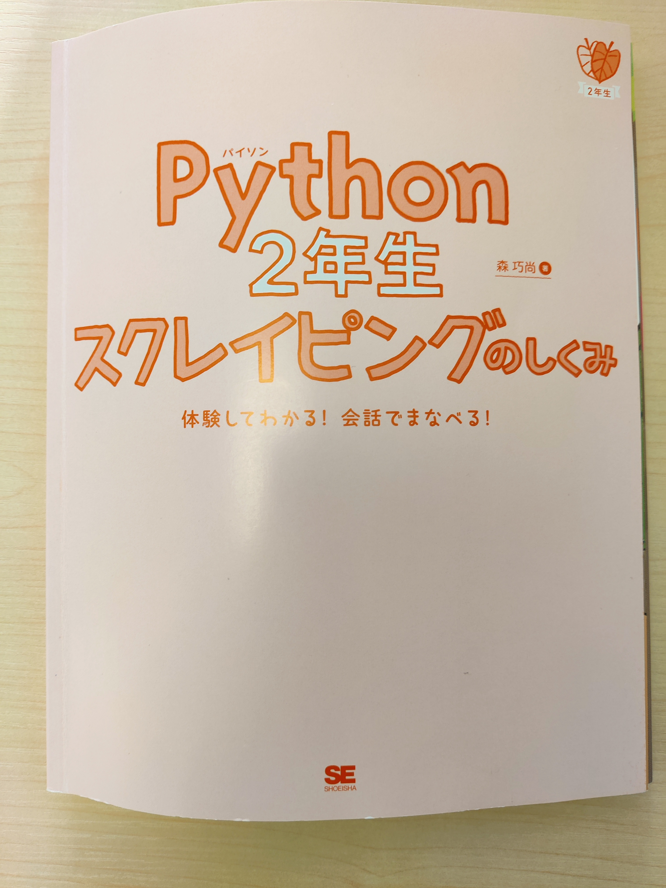

私が行ったプログラミングの学習
①図書館の書籍
前期では、課題も少なかったことから多くの空き時間があったので、図書館でPython基礎の本を借り、授業の空きコマなどの暇な時にプログラミング（Python）の学習をしていました。
その中でも良いと感じたものは「Python「基礎編」ワークブック (情報演習―ステップ30) 単行本」だ。
この本は、他の一般的な書籍とは異なりアウトプットの割合が大きいので身に入りやすい。これからPythonに手を出したいという人におすすめの逸品だ。
②スクレイピング(Python)
前期でPythonの基礎を終えて、後期では実践的なスクレイピングの学習を始めた。用いた書籍は「Python2年生 スクレイピングのしくみ 体験してわかる！会話でまなべる！」
この書籍は会話形式で進められ、図や絵が多く使われており、Mac・Windows両方の説明があるので非常に分かりやすい。これまでにYahoo!ニュースのデータ解析をして自身のPCにテキスト化をした。
次へ